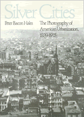

Chronicling the change in city photography from 1839 to 1915
Chronicling the change in city photography from 1839 to 1915


 Chronicling the change in city photography from 1839 to 1915
Chronicling the change in city photography from 1839 to 1915

|  |
Silver CitiesThe Photography of American Urbanization, 1839-1915Peter Bacon Halespaper EAN: 978-0-87722-399-3 (ISBN: 0-87722-399-8) |
Philadelphia Book Clinic Certificate of Award, 1985
"Brilliant. This well-written and accessible book contains more than 200 photographs that are well-reproduced and extremely valuable as companions to the text and as a compendium of the work of many famous and some neglected photographers."
—The Philadelphia Inquirer
The photographers of the American city during the nineteenth and early twentieth centuries were explorers in a cultural frontier. They enclosed within the frames of their photographs a present that was always instantly becoming the past. Thereby they gave Americans a visual history of their cities. As they preserved, so also they advertised and celebrated change. As protectors against disorder and its dislocating effects, they took the sprawling ooze of the city and placed it, diminished and now orderly, within the frame of their photographs. As goads and announcers of change, they took their cameras into the forbidden zones of the city.
Focusing on five of the largest urban centers in America—San Francisco, Denver, Chicago, Boston, and New York City—during different stages of growth, this lavishly illustrated book gives a wide variety of perspectives on the changing urban scene. The book also chronicles two basic styles of urban photography and the shift from one to the other. Between 1839 and 1885, the first generations of American city photographers devised a grand style much to the liking of architects and boosters that evoked an image of the city as the high point of civilization. With a new vision of the city, however, came a new urban photography. The "White City" of the World's Colombian Exposition Chicago declared to many Americans not the maturity but the false security of the mythos of the American city. Journalists visiting the Exposition looked at Chicago's neighborhoods and called it the "Grey City." The Social Gospel, Progressivism, and the shift from a static to a dynamic vision of the city resulted in a new and powerful urban photography, with an entirely new genus of photographer behind the camera. Aided by a technological evolution in photography and reproduction, Jacob Riis and his followers extended and rewrote the accepted style of urban photography.
"A major resource, including as it does a great deal of careful historical analysis, an excellent bibliography, and two hundred photographs few are likely to have seen before."
—The Yale Review
"[Hales] has brought to his task not only a technical understanding of photography and a great familiarity with 19th century visual images, but also a broad understanding of American urban and cultural history."
—The New York Times Book Review
"A thoughtful and provocative book...neatly pins down the influence of photography on important aspects of our history."
—American Photographer
Peter Bacon Hales is an Assistant Professor in the History of Architecture and Art Department, University of Illinois at Chicago Circle. He is also a practicing photographer.
American Studies
Art and Photography
American Civilization, edited by Allen F. Davis.
The focus of American Civilization, edited by Allen F. Davis, is American cultural history. In keeping with the interdisciplinary work in this field, which characteristically brings together art history, literary history and theory, and material culture, the titles in this series cover diverse aspects of American experience—from attitudes toward death to twentieth-century design innovations to images of country life in art and letters to trade unions' reliance on religious discourse. The series has been a pioneer in presenting work that uses photographs as historical documents and from its inception has been firmly committed to women's studies. As the first university press series in the field, American Civilization provided the inspiration and the standard for much of the interdisciplinary work developing in the contemporary academy.
© 2015 Temple University. All Rights Reserved. This page: http://www.temple.edu/tempress/titles/292_reg.html.